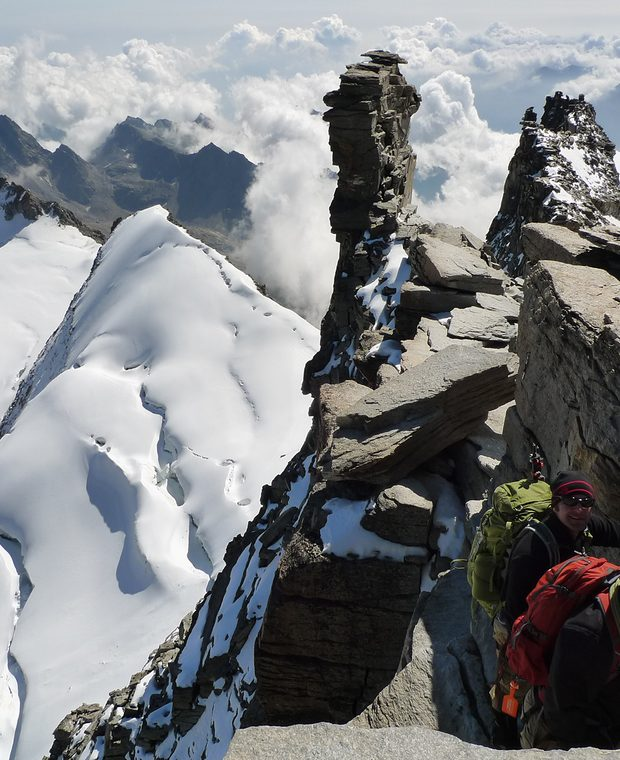

<!DOCTYPE html>
<html lang="en">
<head>
<meta charset="UTF-8" />
<meta name="viewport" content="width=device-width, initial-scale=1.0, viewport-fit=cover" />
<title>SummitReady — Track Journey</title>

<!--
  ════════════════════════════════════════════════════════════════════════════
  SUMMITREADY · TRACK JOURNEY — high-fidelity visual prototype

  ONE activity lifecycle, four states, three entry contexts:
    ready → recording (map | stats | elevation) ⇄ paused → complete → edit

  CANONICAL ACTIVITY PRINCIPLE (non-negotiable, enforced here):
  the activity is created ONCE at Start Tracking with a permanent local id and
  is marked saved locally at that moment. Switching views, pausing, resuming,
  finishing and editing all mutate that same record — nothing in this file
  creates a second activity, and no context produces its own variant.

  OFFLINE-FIRST: Start Tracking is never gated on GPS fix, map tiles or
  network. GPS and connectivity are surfaced as reassurance, never as a lock.

  Prototype only. Does not modify or reinterpret offline-first tracking,
  activity persistence, sync, Summit Data Engine, Mountain DNA, Readiness 2.0,
  Elevation Bank semantics, expedition progress or the Training Plan.
  ════════════════════════════════════════════════════════════════════════════
-->

<script src="https://cdn.tailwindcss.com"></script>
<link rel="preconnect" href="https://fonts.googleapis.com">
<link rel="preconnect" href="https://fonts.gstatic.com" crossorigin>
<link href="https://fonts.googleapis.com/css2?family=Inter:wght@400;500;600;700;800&display=swap" rel="stylesheet">
<script>
  tailwind.config = { theme: { extend: {
    colors: { ink:'#05090B', accent:'#167DF7', train:'#24EFA4', stop:'#E4483C' },
    fontFamily: { sans:['Inter','system-ui','-apple-system','sans-serif'] },
  } } }
</script>
<style>
  :root { --ink:#05090B; --accent:#167DF7; --train:#24EFA4; --stop:#E4483C;
          --i2:rgba(255,255,255,.62); --i3:rgba(255,255,255,.42); --grid:rgba(255,255,255,.09); }
  html, body { margin:0; background:var(--ink); color-scheme:dark; }
  .no-sb { -ms-overflow-style:none; scrollbar-width:none; }
  .no-sb::-webkit-scrollbar { display:none; }
  .ph { background-color:#101c28; background-image:
        linear-gradient(165deg, rgba(22,125,247,.12), rgba(0,0,0,0) 48%),
        linear-gradient(to top, #070c0e 0%, #101c28 42%, #21405e 72%, #4d6d8e 100%); }
  .ph > img { opacity:0; transition:opacity .5s ease; }
  .ph > img.ok { opacity:1; }
  .glass     { background:rgba(255,255,255,.07); border:1px solid rgba(255,255,255,.13); backdrop-filter:blur(14px); }
  .navglass  { background:rgba(5,9,11,.94); backdrop-filter:blur(22px) saturate(140%); }
  .panel     { background:linear-gradient(158deg, rgba(18,30,44,.92) 0%, rgba(10,16,21,.94) 62%, rgba(8,12,16,.96) 100%);
               border:1px solid rgba(255,255,255,.075); }
  .panel-sub { background:rgba(255,255,255,.04); border:1px solid rgba(255,255,255,.07); }
  .pressable { transition:transform .12s ease, filter .12s ease; }
  .pressable:active { transform:scale(.975); filter:brightness(1.14); }
  #sheet, #scrim, #toast { transition:opacity .28s ease, transform .3s cubic-bezier(.22,1,.36,1); }
  @keyframes pulse { 0%,100%{opacity:1} 50%{opacity:.35} }
  .rec-dot { animation:pulse 1.6s ease-in-out infinite; }
  @media (prefers-reduced-motion: reduce) { *,::before,::after { animation:none !important; transition:none !important; } }
  :focus-visible { outline:2px solid var(--accent); outline-offset:2px; border-radius:6px; }
  .safe-top { padding-top:calc(12px + env(safe-area-inset-top, 0px)); }
  .safe-bot { padding-bottom:env(safe-area-inset-bottom, 0px); }
  input, textarea, select { font:inherit; color:inherit; }
</style>
</head>
<body class="font-sans text-white antialiased">

<div class="relative mx-auto w-full max-w-[430px] min-h-screen bg-ink overflow-x-hidden">
  <main id="screen"></main>
  <div id="navSpacer" class="h-[96px]"></div>

  <!-- BottomNavigation. During recording it stays mounted but is de-emphasised
       and cannot end the activity — see navGuard(). -->
  <div id="navBar" class="fixed bottom-0 left-1/2 -translate-x-1/2 w-full max-w-[430px] navglass
              border-t border-white/[.07] z-30 safe-bot transition-opacity duration-300">
    <div id="tabs" class="flex items-start justify-around pt-[10px] pb-[12px]"></div>
  </div>

  <div id="scrim" style="opacity:0;pointer-events:none" class="fixed inset-0 z-40 bg-black/72 backdrop-blur-[2px]"></div>
  <div id="sheet" style="transform:translate(-50%,105%)" role="dialog" aria-modal="true"
       class="fixed bottom-0 left-1/2 w-full max-w-[430px] z-50 max-h-[86vh] overflow-y-auto no-sb
              rounded-t-[22px] border-t border-white/10 px-[17px] pt-[14px] pb-[30px] safe-bot"></div>

  <div id="toast" style="opacity:0;transform:translate(-50%,8px)"
       class="pointer-events-none fixed left-1/2 bottom-[104px] z-[60] max-w-[92%]
              px-[15px] py-[9px] rounded-full glass text-[11.5px] font-semibold text-center"></div>
</div>

<script>
/* ════════════════════════ ENTRY CONTEXTS ════════════════════════
   One tracking engine, three entry points. The context never changes how the
   hike is recorded — only what the finished activity is credited towards.   */
const CONTEXTS = {
  free_hike: { id:'free_hike', banner:null },
  training: { id:'training', banner:{
    kind:'TRAINING SESSION', title:'Mountain Day', sub:'Target: 900 m elevation gain', accent:'train' } },
  expedition: { id:'expedition', banner:{
    kind:'EXPEDITION STAGE', title:'Blencathra → Hallsfell Top', sub:'Everest Simulation', accent:'accent' } },
};

/* ═════════════════════════ TRACK STATE ═════════════════════════ */
const TRACK = {
  state:   'ready',          /* ready | recording | paused | complete | edit */
  context: 'free_hike',
  view:    'map',            /* map | stats | elevation — inside recording   */
  gps:     'ready',          /* acquiring | ready — informational only       */
  online:  false,            /* offline by default: Start must still work    */
  offlineMapReady: true,

  /* the suggested route is optional — recording never requires one */
  suggested: { name:'Helvellyn via Striding Edge', km:8.4, gain:612, time:'3–4 hrs', img:'mockup-assets/tr-route.jpg' },
  route: null,               /* set only if the user chooses to follow one   */

  /* THE canonical activity. Created once, mutated thereafter. */
  activity: null,
};

function newActivity() {
  /* a permanent local identity is minted immediately and the record is marked
     saved locally — exactly as the production offline-first flow does. */
  return {
    id: 'act_' + Math.random().toString(36).slice(2, 10),
    createdAt: Date.now(),
    savedLocally: true,          /* true from the first millisecond          */
    syncState: 'pending',        /* sync happens separately, never blocking  */
    context: TRACK.context,
    route: TRACK.route,
    elapsed: 5057,               /* 01:24:17 demo seed                        */
    distance: 8.4, gain: 612, elevation: 742, maxElevation: 950, minElevation: 210,
    movingTime:'3h 12m', pace:'14:52 /km', calories:1248, speed:4.8, bearing:'NE',
    satellites:12, accuracy:'Good',
    waypoints: [],
    /* optional enrichment — never required for the activity to exist */
    name:'Helvellyn via Striding Edge', type:'Hike', date:'Sat 13 Sep 2026',
    notes:'', privacy:'Private', photos:[], coverPhoto:0,
    expedition:'Everest Simulation', applyElevation:true,
  };
}

/* Consequences are supplied by the engines that own them. Readiness is only
   rendered when a delta is provided — the prototype never invents a score. */
function consequences(a) {
  const out = [];
  if (a.context === 'expedition') out.push({ icon:'peak', label:'EVEREST SIMULATION',
    head:`+${a.gain} m added to your expedition`, from:'1,420 m', to:'2,032 m',
    note:'Stage 1 complete — Bowfell unlocks next.', tone:'accent' });
  if (a.context === 'training') out.push({ icon:'calendar', label:'TRAINING PLAN',
    head:'Mountain Day completed', from:'900 m target', to:`${a.gain} m achieved`,
    note:'Week 3 · 2 of 4 sessions complete.', tone:'train' });
  out.push({ icon:'bars', label:'ELEVATION BANK', head:`+${a.gain} m banked`,
    from:'12,450 m', to:`${(12450 + a.gain).toLocaleString('en-GB')} m`, tone:'accent' });
  out.push(READINESS_DELTA
    ? { icon:'gauge', label:'READINESS', head:`${READINESS_DELTA.from}% → ${READINESS_DELTA.to}%`,
        note:`Evidence improved: ${READINESS_DELTA.evidence.join(', ')}`, tone:'train' }
    : { icon:'gauge', label:'READINESS', head:'Recalculating',
        note:'Your score updates once the Readiness engine has processed this activity.', tone:'muted' });
  return out;
}
/* set to null to see the honest "recalculating" state the engine-free case needs */
let READINESS_DELTA = { from:52, to:54, evidence:['Elevation', 'Experience'] };

const PHOTO_POOL = ['mockup-assets/tr-p1.jpg','mockup-assets/tr-p2.jpg','mockup-assets/tr-p3.jpg','mockup-assets/tr-p4.jpg'];

/* ═════════════════════════ ICONS ═════════════════════════ */
const S = (d, x='') => `<svg viewBox="0 0 24 24" fill="none" stroke="currentColor" stroke-width="1.7" stroke-linecap="round" stroke-linejoin="round" ${x}>${d}</svg>`;
const ICONS = {
  mark:S(`<path d="M1.6 19.2 6.9 12l2.3 2.9 4.1-6.2 8.1 10.5z"/><path d="M7.4 11.2 9.6 8l1.6 2.2"/>`,'stroke-width="1.5"'),
  peak:S(`<path d="M2.6 19.4h18.8L15.2 5.4l-3.8 6.8-2.8-3.6z"/>`,'stroke-width="1.6"'),
  compass:S(`<circle cx="12" cy="12" r="9"/><path d="m15.6 8.4-2 5.2-5.2 2 2-5.2 5.2-2Z"/>`,'stroke-width="2"'),
  home:S(`<path d="M3.5 10.1 12 3.4l8.5 6.7v9.5a1 1 0 0 1-1 1H4.5a1 1 0 0 1-1-1v-9.5Z"/>`),
  boots:`<svg viewBox="0 0 24 24" fill="none" stroke="currentColor" stroke-width="1.5"><ellipse cx="7.4" cy="7" rx="2.7" ry="4.3"/><ellipse cx="7.4" cy="15.4" rx="2.2" ry="2.2"/><ellipse cx="16.6" cy="10.4" rx="2.7" ry="4.3"/><ellipse cx="16.6" cy="18.8" rx="2.2" ry="2.2"/></svg>`,
  user:S(`<circle cx="12" cy="7.8" r="3.7"/><path d="M4.9 20.4a7.1 7.1 0 0 1 14.2 0"/>`),
  bell:S(`<path d="M18.2 8.8a6.2 6.2 0 1 0-12.4 0c0 6.6-2.5 8.4-2.5 8.4h17.4s-2.5-1.8-2.5-8.4Z"/><path d="M13.8 20.6a2.1 2.1 0 0 1-3.6 0"/>`),
  chev:S(`<path d="m9 5 7 7-7 7"/>`), chevL:S(`<path d="m15 5-7 7 7 7"/>`), chevD:S(`<path d="m5 9 7 7 7-7"/>`),
  play:`<svg viewBox="0 0 24 24" fill="currentColor"><path d="M8.4 5.6 19 12 8.4 18.4z"/></svg>`,
  pause:`<svg viewBox="0 0 24 24" fill="currentColor"><rect x="6.6" y="5" width="3.8" height="14" rx="1.3"/><rect x="13.6" y="5" width="3.8" height="14" rx="1.3"/></svg>`,
  stop:`<svg viewBox="0 0 24 24" fill="currentColor"><rect x="6" y="6" width="12" height="12" rx="2.4"/></svg>`,
  check:S(`<path d="m5 12.6 4.6 4.4L19 6.8"/>`,'stroke-width="2.6"'),
  pin:S(`<path d="M12 21.2s7-5.6 7-11a7 7 0 1 0-14 0c0 5.4 7 11 7 11Z"/><circle cx="12" cy="10.2" r="2.6"/>`),
  crosshair:S(`<circle cx="12" cy="12" r="7.4"/><circle cx="12" cy="12" r="2.2"/><path d="M12 2.2v2.6M12 19.2v2.6M2.2 12h2.6M19.2 12h2.6"/>`),
  layers:S(`<path d="m12 3.2 8.8 4.6L12 12.4 3.2 7.8z"/><path d="m3.2 12.4 8.8 4.6 8.8-4.6M3.2 16.6 12 21.2l8.8-4.6"/>`),
  map:S(`<path d="M9 4 3 6.6v13.2L9 17.2l6 2.6 6-2.6V4l-6 2.6L9 4Z"/><path d="M9 4v13.2"/><path d="M15 6.6v13.2"/>`),
  nav:S(`<path d="M20.4 3.6 3.8 10.4l7.2 2.6 2.6 7.2z"/>`),
  bars:`<svg viewBox="0 0 24 24" fill="currentColor"><rect x="4" y="14.5" width="3.6" height="5.5" rx="1.2"/><rect x="10.2" y="10" width="3.6" height="10" rx="1.2"/><rect x="16.4" y="4.8" width="3.6" height="15.2" rx="1.2"/></svg>`,
  gauge:S(`<path d="M4 17.4a9 9 0 1 1 16 0"/><path d="M12 17.4 16 10"/><circle cx="12" cy="17.6" r="1.4"/>`),
  clock:S(`<circle cx="12" cy="12" r="8.6"/><path d="M12 7.2V12l3 1.8"/>`),
  calendar:S(`<rect x="3.4" y="5.2" width="17.2" height="15.4" rx="2.6"/><path d="M3.4 10.1h17.2M8.4 3.4v3.6M15.6 3.4v3.6"/>`),
  camera:S(`<path d="M3.4 8.6a2 2 0 0 1 2-2h1.9l1.3-2.2h6.8l1.3 2.2h1.9a2 2 0 0 1 2 2v9a2 2 0 0 1-2 2H5.4a2 2 0 0 1-2-2z"/><circle cx="12" cy="12.8" r="3.6"/>`),
  plus:S(`<path d="M12 5v14M5 12h14"/>`),
  x:S(`<path d="M6 6l12 12M18 6 6 18"/>`,'stroke-width="2"'),
  lock:S(`<rect x="4.4" y="10.4" width="15.2" height="10.2" rx="2.4"/><path d="M8 10.4V7.6a4 4 0 0 1 8 0v2.8"/>`),
  bookmark:S(`<path d="M6 3.6h12v17l-6-4-6 4z"/>`),
  route:S(`<circle cx="5.1" cy="17.7" r="1.9"/><circle cx="18.9" cy="6.3" r="1.9"/><path d="M6.7 16.9c2.8-.5 2.5-4.3 4.9-5.5s5 .2 6.1-3.2"/>`),
  wifi:S(`<path d="M12 18.6v.1"/><path d="M8.4 15.2a5 5 0 0 1 7.2 0M5 11.8a10 10 0 0 1 14 0M1.8 8.4a15 15 0 0 1 20.4 0"/>`),
  sat:S(`<path d="M12 3.6v4.2M12 16.2v4.2M3.6 12h4.2M16.2 12h4.2"/><circle cx="12" cy="12" r="4"/>`),
  flag:S(`<path d="M5.4 21V3.6M5.4 4.6h12.4l-2.4 4 2.4 4H5.4"/>`),
  pencil:S(`<path d="m4 20 .9-4 11-11 3.1 3.1-11 11z"/><path d="M14.4 5.6 18 9.2"/>`),
};
function icon(n,s){const h=document.createElement('span');h.innerHTML=ICONS[n]||'';const g=h.firstElementChild;
  if(g){g.setAttribute('width',s);g.setAttribute('height',s);g.style.display='block';}return h.innerHTML;}
function hydrateIcons(r=document){r.querySelectorAll('[data-icon]').forEach(n=>{
  n.innerHTML=icon(n.dataset.icon,n.dataset.size||16);n.style.display='inline-flex';});}
function loadPhotos(r=document){r.querySelectorAll('img[data-src]').forEach(i=>{
  if(i.dataset.started||!i.dataset.src)return;i.dataset.started='1';
  i.addEventListener('load',()=>i.classList.add('ok'));i.addEventListener('error',()=>i.remove());i.src=i.dataset.src;});}

const hhmmss = s => [Math.floor(s/3600), Math.floor(s/60)%60, s%60].map(n=>String(n).padStart(2,'0')).join(':');

/* ═════════════════════════ SHARED PARTS ═════════════════════════ */
function AppHeader() {
  return `<div class="flex items-center justify-between px-[17px] safe-top">
    <div class="flex items-center gap-[9px] min-w-0">
      
      
    </div>
    <div class="flex items-center gap-[12px] shrink-0">
      <button data-act="Notifications" class="pressable text-white/85"><span data-icon="bell" data-size="18"></span></button>
      <button data-act="Profile" class="pressable w-[30px] h-[30px] rounded-full overflow-hidden ph border border-white/25">
        </button>
    </div>
  </div>`;
}

/* ContextBanner — says what this recording will count towards, nothing more */
function ContextBanner() {
  const c = CONTEXTS[TRACK.context].banner;
  if (!c) return '';
  const tone = c.accent === 'train' ? 'text-train border-train/45 bg-train/[.08]' : 'text-accent border-accent/45 bg-accent/[.08]';
  return `<div class="mx-[17px] mt-[12px] rounded-[13px] border ${tone} px-[13px] py-[10px]">
    <div class="text-[9px] font-bold tracking-[0.18em] opacity-90">${c.kind}</div>
    <div class="mt-[4px] text-[14px] font-bold text-white leading-[18px] break-words">${c.title}</div>
    <div class="mt-[2px] text-[11px] text-white/62 break-words">${c.sub}</div>
  </div>`;
}

function MetricTile(v, l, big) {
  return `<div class="panel-sub rounded-[13px] p-[12px] min-w-0">
    <div class="${big ? 'text-[24px] leading-[26px]' : 'text-[20px] leading-[23px]'} font-bold tracking-[-0.03em] tabular-nums truncate">${v}</div>
    <div class="mt-[3px] text-[10px] leading-[12px] text-white/52">${l}</div>
  </div>`;
}

/* ═══════════════════════ STATE 1 — TRACK READY ═══════════════════════ */
function TrackReady() {
  const s = TRACK.suggested;
  const acquiring = TRACK.gps === 'acquiring';
  return `${AppHeader()}
  <div class="mt-[13px] px-[17px] flex justify-center">
    <div class="inline-flex items-center p-[3px] rounded-full glass">
      <button data-seg="Track" class="pressable h-[32px] px-[24px] rounded-full text-[13px] font-semibold bg-accent text-white">Track</button>
      <button data-act="Manual entry" class="pressable h-[32px] px-[24px] rounded-full text-[13px] font-semibold text-white/60">Manual</button>
    </div>
  </div>
  ${ContextBanner()}

  <section class="mt-[18px] px-[17px]">
    <h1 class="text-[29px] leading-[33px] font-bold tracking-[-0.032em]">Every hike<br/>moves you higher.</h1>
    <p class="mt-[10px] text-[12.5px] leading-[18px] text-white/62">
      Track your hike, build your elevation and add it to your training or expeditions.
    </p>
    <div class="mt-[14px] flex gap-[8px]">
      ${[['pin','GPS Tracking'],['mark','Elevation Gain'],['peak','Add to Expeditions']].map(([ic,l])=>
        `<div class="flex-1 min-w-0 panel-sub rounded-[13px] px-[9px] py-[11px] text-center">
          <span class="inline-flex text-accent" data-icon="${ic}" data-size="17"></span>
          <div class="mt-[6px] text-[9.5px] leading-[12px] text-white/78">${l}</div>
        </div>`).join('')}
    </div>
  </section>

  <section class="mt-[15px] relative">
    <div class="relative h-[236px] ph overflow-hidden">
      
      <div class="absolute inset-0" style="background:linear-gradient(to bottom, rgba(5,9,11,.72) 0%, rgba(5,9,11,.12) 34%, rgba(5,9,11,.72) 82%, #05090B 100%);"></div>
      <!-- reassurance, never a gate -->
      <div class="absolute top-[12px] left-[17px] flex flex-wrap gap-[6px]">
        <span class="flex items-center gap-[6px] px-[10px] py-[6px] rounded-full glass text-[10.5px] font-semibold">
          <span class="w-[7px] h-[7px] rounded-full ${acquiring ? 'bg-[#E9B949]' : 'bg-train'}"></span>
          ${acquiring ? 'Acquiring GPS…' : 'GPS ready'}
        </span>
        ${TRACK.offlineMapReady ? `<span class="flex items-center gap-[5px] px-[10px] py-[6px] rounded-full glass text-[10.5px] text-white/72">
          <span data-icon="map" data-size="12"></span> Offline maps ready</span>` : ''}
      </div>
    </div>
  </section>

  <section class="-mt-[26px] relative px-[17px]">
    <button id="startBtn" data-act="Start Tracking" class="pressable w-full flex items-center justify-center gap-[10px] h-[58px] rounded-[16px]
                   bg-accent text-white text-[17px] font-bold shadow-[0_14px_34px_-12px_rgba(22,125,247,.95)]">
      <span class="grid place-items-center w-[26px] h-[26px] rounded-full bg-white/20" data-icon="play" data-size="12"></span>
      Start Tracking
    </button>
    ${acquiring ? `<p class="mt-[8px] text-center text-[10.5px] text-white/50">
      You can start now — your track begins recording as soon as GPS locks on.</p>` : ''}

    <div class="mt-[11px] grid grid-cols-2 gap-[9px]">
      <button data-act="Saved Routes" class="pressable panel-sub rounded-[13px] h-[46px] flex items-center justify-center gap-[8px] text-[12.5px] font-semibold">
        <span class="text-white/70" data-icon="bookmark" data-size="15"></span> Saved Routes</button>
      <button data-act="Choose Route" class="pressable panel-sub rounded-[13px] h-[46px] flex items-center justify-center gap-[8px] text-[12.5px] font-semibold">
        <span class="text-white/70" data-icon="plus" data-size="15"></span> Choose Route</button>
    </div>

    <div class="mt-[11px] panel rounded-[15px] p-[11px]">
      <button data-act="Suggested Route" class="pressable w-full flex items-center gap-[11px] text-left">
        <div class="w-[62px] h-[52px] rounded-[11px] overflow-hidden ph shrink-0">
          </div>
        <div class="flex-1 min-w-0">
          <div class="text-[9px] font-bold tracking-[0.16em] text-white/50">SUGGESTED NEARBY</div>
          <div class="mt-[3px] text-[13px] font-bold leading-[16px] break-words">${s.name}</div>
          <div class="mt-[3px] text-[10.5px] text-white/58">${s.km} km <span class="text-white/25">•</span> ${s.gain} m <span class="text-white/25">•</span> ${s.time}</div>
        </div>
        <span class="text-white/35 shrink-0" data-icon="chev" data-size="14"></span>
      </button>
      <div class="mt-[10px] pt-[10px] border-t border-white/[.07] flex items-center justify-between gap-[10px]">
        <span class="text-[10.5px] text-white/50 min-w-0">A route is optional — you can just walk.</span>
        <button data-act="Record Without Route" class="pressable shrink-0 text-[11px] font-bold text-accent whitespace-nowrap">Record without a route</button>
      </div>
    </div>
  </section>`;
}

/* ═══════════════════ STATE 2 — TRACK RECORDING ═══════════════════ */
function RecordingBar(a) {
  const paused = TRACK.state === 'paused';
  return `<div class="sticky top-0 z-20 navglass border-b border-white/[.07] safe-top pb-[11px]">
    <div class="px-[17px] flex items-center justify-between gap-[10px]">
      <div class="flex items-center gap-[9px] min-w-0">
        <span class="w-[9px] h-[9px] rounded-full shrink-0 ${paused ? 'bg-[#E9B949]' : 'bg-train rec-dot'}"></span>
        <span class="text-[12.5px] font-bold tracking-[0.06em] ${paused ? 'text-[#E9B949]' : 'text-train'} whitespace-nowrap">
          ${paused ? 'PAUSED' : 'RECORDING'}</span>
        <span id="timer" class="text-[24px] font-extrabold tracking-[-0.03em] tabular-nums ml-[4px]">${hhmmss(a.elapsed)}</span>
      </div>
      <button data-act="${paused ? 'Resume' : 'Pause'}" aria-label="${paused ? 'Resume' : 'Pause'}"
        class="pressable shrink-0 w-[46px] h-[46px] rounded-full grid place-items-center
               ${paused ? 'bg-train text-ink' : 'glass text-white'}">
        <span data-icon="${paused ? 'play' : 'pause'}" data-size="17"></span></button>
    </div>
    <div class="mt-[11px] px-[17px]">
      <div class="flex p-[3px] rounded-[12px] panel-sub">
        ${['map','stats','elevation'].map(v=>`<button data-view="${v}"
          class="flex-1 h-[32px] rounded-[9px] text-[12px] font-bold capitalize transition-colors
                 ${TRACK.view===v?'bg-accent text-white':'text-white/58'}">${v}</button>`).join('')}
      </div>
    </div>
  </div>`;
}

/* the live map — recorded track vs planned route are drawn differently */
function MapView(a) {
  return `<div class="relative h-[400px] ph overflow-hidden">
    
    <div class="absolute inset-0" style="background:linear-gradient(to bottom, rgba(5,9,11,.5) 0%, rgba(5,9,11,0) 24%, rgba(5,9,11,.2) 70%, rgba(5,9,11,.8) 100%);"></div>

    <svg class="absolute inset-0 w-full h-full" viewBox="0 0 1000 1000" preserveAspectRatio="none" aria-hidden="true">
      <path d="M620 120 L586 210 L612 300 L560 372" fill="none" stroke="rgba(5,9,11,.5)" stroke-width="11"
            stroke-linecap="round" vector-effect="non-scaling-stroke"/>
      <path d="M620 120 L586 210 L612 300 L560 372" fill="none" stroke="rgba(255,255,255,.72)" stroke-width="5"
            stroke-linecap="round" stroke-dasharray="14 16" vector-effect="non-scaling-stroke"/>
      <path d="M560 372 L512 452 L548 530 L498 604 L534 690 L470 760 L506 848"
            fill="none" stroke="rgba(5,9,11,.55)" stroke-width="13" stroke-linecap="round" stroke-linejoin="round" vector-effect="non-scaling-stroke"/>
      <path d="M560 372 L512 452 L548 530 L498 604 L534 690 L470 760 L506 848"
            fill="none" stroke="#167DF7" stroke-width="7" stroke-linecap="round" stroke-linejoin="round" vector-effect="non-scaling-stroke"/>
    </svg>

    <!-- summit marker on the planned route -->
    <div class="absolute" style="left:62%; top:17%; transform:translate(-50%,-112%)">
      <div class="px-[9px] py-[6px] rounded-[9px] glass whitespace-nowrap">
        <div class="flex items-center gap-[5px] text-[10.5px] font-bold"><span class="text-[#E9B949]" data-icon="peak" data-size="11"></span> Helvellyn</div>
        <div class="text-[9.5px] text-white/62 tabular-nums">950 m</div>
      </div>
    </div>
    <!-- current position -->
    <div class="absolute w-[20px] h-[20px] -ml-[10px] -mt-[10px] rounded-full bg-white border-[4px] border-accent
                shadow-[0_0_0_6px_rgba(22,125,247,.28)]" style="left:50.6%; top:84.8%"></div>

    <div class="absolute right-[12px] top-[12px] flex flex-col gap-[8px]">
      ${[['nav','Recentre'],['map','Map style'],['layers','Layers'],['crosshair','Follow']].map(([ic,l])=>
        `<button data-act="${l}" aria-label="${l}" class="pressable w-[40px] h-[40px] rounded-full glass grid place-items-center text-white/90">
          <span data-icon="${ic}" data-size="17"></span></button>`).join('')}
    </div>

    <div class="absolute left-[12px] bottom-[12px] flex items-center gap-[7px] px-[10px] py-[6px] rounded-full glass text-[10px] text-white/75">
      <span class="w-[8px] h-[3px] rounded-full bg-accent"></span> Recorded
      <span class="ml-[4px] w-[8px] h-[3px] rounded-full bg-white/70"></span> Planned
    </div>
  </div>

  <div class="px-[17px] mt-[13px] grid grid-cols-2 gap-[9px]">
    ${MetricTile(a.distance + ' km', 'Distance', true)}
    ${MetricTile(a.gain + ' m', 'Elevation Gain', true)}
    ${MetricTile(a.elevation + ' m', 'Current Elevation')}
    ${MetricTile(a.pace, 'Avg. Pace')}
  </div>`;
}

function StatsView(a) {
  return `<div class="px-[17px] mt-[13px] grid grid-cols-2 gap-[9px]">
    ${MetricTile(a.distance + ' km', 'Distance', true)}
    ${MetricTile(a.gain + ' m', 'Elevation Gain', true)}
    ${MetricTile(a.pace, 'Avg. Pace')}
    ${MetricTile(a.movingTime, 'Moving Time')}
    ${MetricTile(a.elevation + ' m', 'Current Elevation')}
    ${MetricTile(a.calories.toLocaleString('en-GB'), 'Calories')}
  </div>
  <div class="px-[17px] mt-[13px]">
    <div class="panel rounded-[15px] p-[13px]">
      <div class="text-[10px] font-bold tracking-[0.16em] text-white/55">LIVE SIGNAL</div>
      <div class="mt-[10px] grid grid-cols-2 gap-[9px]">
        ${[['sat', a.satellites, 'Satellites'], ['crosshair', a.accuracy, 'GPS accuracy'],
           ['nav', a.speed + ' km/h', 'Current speed'], ['compass', a.bearing, 'Direction']].map(([ic,v,l])=>
          `<div class="flex items-center gap-[9px] min-w-0">
            <span class="text-accent shrink-0" data-icon="${ic}" data-size="16"></span>
            <div class="min-w-0"><div class="text-[14px] font-bold truncate tabular-nums">${v}</div>
              <div class="text-[9.5px] text-white/50">${l}</div></div>
          </div>`).join('')}
      </div>
    </div>
  </div>`;
}

/* Elevation profile: single series, ticks naming values the axis reaches,
   one direct label on the current position. */
function ElevationView(a) {
  const W = 362, H = 176, pl = 34, pr = 14, pt = 16, pb = 24;
  const pts = [210,260,330,420,500,600,690,780,860,930,950,905,840,760,700,742];
  const max = 1000, iw = W - pl - pr, ih = H - pt - pb;
  const x = i => pl + (i / (pts.length - 1)) * iw;
  const y = v => pt + ih - (v / max) * ih;
  const line = pts.map((v,i)=>`${i?'L':'M'}${x(i).toFixed(1)} ${y(v).toFixed(1)}`).join(' ');
  const area = `${line} L${x(pts.length-1).toFixed(1)} ${(H-pb).toFixed(1)} L${pl} ${(H-pb).toFixed(1)} Z`;
  const peakI = pts.indexOf(950), curI = pts.length - 1;
  return `<div class="px-[17px] mt-[13px]">
    <div class="panel rounded-[15px] p-[13px]">
      <div class="flex items-center justify-between gap-[10px]">
        <div class="text-[10px] font-bold tracking-[0.16em] text-white/55 whitespace-nowrap">ELEVATION PROFILE</div>
        <div class="text-[10px] text-white/50 tabular-nums whitespace-nowrap">Min ${a.minElevation} m · Max ${a.maxElevation} m</div>
      </div>
      <svg viewBox="0 0 ${W} ${H}" class="w-full mt-[10px] block" role="img"
           aria-label="Elevation profile, currently ${a.elevation} metres, maximum ${a.maxElevation} metres">
        <defs><linearGradient id="eg" x1="0" y1="0" x2="0" y2="1">
          <stop offset="0%" stop-color="#167DF7" stop-opacity=".45"/>
          <stop offset="100%" stop-color="#167DF7" stop-opacity="0"/></linearGradient></defs>
        ${[0,250,500,750,1000].map(v=>`
          <line x1="${pl}" y1="${y(v).toFixed(1)}" x2="${W-pr}" y2="${y(v).toFixed(1)}" stroke="var(--grid)" stroke-width="1" fill="none"/>
          <text x="${pl-6}" y="${(y(v)+3.4).toFixed(1)}" text-anchor="end" fill="var(--i3)" font-size="9" font-family="Inter, sans-serif">${v}</text>`).join('')}
        <path d="${area}" fill="url(#eg)" stroke="none"/>
        <path d="${line}" fill="none" stroke="#167DF7" stroke-width="2.4" stroke-linejoin="round" stroke-linecap="round"/>
        <circle cx="${x(peakI).toFixed(1)}" cy="${y(950).toFixed(1)}" r="4" fill="#E9B949" stroke="#05090B" stroke-width="2"/>
        <text x="${x(peakI).toFixed(1)}" y="${(y(950)-9).toFixed(1)}" text-anchor="middle" fill="#E9B949" font-size="9.5" font-weight="700" font-family="Inter, sans-serif">950 m</text>
        <circle cx="${x(curI).toFixed(1)}" cy="${y(742).toFixed(1)}" r="5.5" fill="#167DF7" stroke="#05090B" stroke-width="2"/>
        ${[0,Math.round((pts.length-1)/2),pts.length-1].map(i=>
          `<text x="${x(i).toFixed(1)}" y="${H-6}" text-anchor="${i===0?'start':i===pts.length-1?'end':'middle'}"
                 fill="var(--i3)" font-size="9" font-family="Inter, sans-serif">${(a.distance*i/(pts.length-1)).toFixed(1)} km</text>`).join('')}
      </svg>
      <div class="mt-[8px] grid grid-cols-3 gap-[8px]">
        ${[[a.elevation+' m','Current'],[a.maxElevation+' m','Max reached'],[a.gain+' m','Total gain']].map(([v,l])=>
          `<div class="min-w-0"><div class="text-[15px] font-bold tabular-nums truncate">${v}</div>
            <div class="text-[9.5px] text-white/50">${l}</div></div>`).join('')}
      </div>
    </div>
  </div>`;
}

function RecordingControls() {
  const paused = TRACK.state === 'paused';
  return `<div class="px-[17px] mt-[14px]">
    <button data-act="Add Waypoint" class="pressable w-full h-[44px] rounded-[13px] panel-sub flex items-center justify-center gap-[8px] text-[12.5px] font-semibold">
      <span class="text-accent" data-icon="flag" data-size="15"></span> Add Waypoint
      ${TRACK.activity && TRACK.activity.waypoints.length ? `<span class="text-white/45">· ${TRACK.activity.waypoints.length}</span>` : ''}
    </button>
    <div class="mt-[10px] grid grid-cols-2 gap-[10px]">
      <button data-act="${paused ? 'Resume' : 'Pause'}" class="pressable h-[58px] rounded-[15px] flex items-center justify-center gap-[9px]
                     text-[15px] font-bold ${paused ? 'bg-train text-ink' : 'bg-[#E9B949] text-ink'}">
        <span data-icon="${paused ? 'play' : 'pause'}" data-size="16"></span> ${paused ? 'Resume' : 'Pause'}</button>
      <button data-act="Finish" class="pressable h-[58px] rounded-[15px] flex items-center justify-center gap-[9px]
                     text-[15px] font-bold bg-stop text-white">
        <span data-icon="stop" data-size="15"></span> Finish</button>
    </div>
    <p class="mt-[9px] text-center text-[10px] text-white/40">
      Saved on this device as you go${TRACK.online ? '' : ' — no signal needed'}.
    </p>
  </div>`;
}

function TrackRecording() {
  const a = TRACK.activity;
  return `${RecordingBar(a)}${ContextBanner()}
    ${TRACK.view === 'map' ? MapView(a) : TRACK.view === 'stats' ? StatsView(a) : ElevationView(a)}
    ${RecordingControls()}`;
}

/* ═══════════════════ STATE 3 — ACTIVITY COMPLETE ═══════════════════ */
function ConsequenceRow(c) {
  const tone = c.tone === 'train' ? 'text-train' : c.tone === 'muted' ? 'text-white/55' : 'text-accent';
  return `<div class="p-[12px] flex items-start gap-[11px]">
    <span class="shrink-0 mt-[1px] ${tone}" data-icon="${c.icon}" data-size="18"></span>
    <div class="min-w-0 flex-1">
      <div class="text-[9px] font-bold tracking-[0.16em] text-white/50">${c.label}</div>
      <div class="mt-[4px] text-[14.5px] font-bold leading-[18px] ${tone} break-words">${c.head}</div>
      ${c.from ? `<div class="mt-[4px] flex items-center gap-[7px] text-[11.5px] text-white/62 tabular-nums flex-wrap">
        <span>${c.from}</span><span class="text-white/30">→</span><span class="text-white font-semibold">${c.to}</span></div>` : ''}
      ${c.note ? `<div class="mt-[4px] text-[10.5px] leading-[14px] text-white/52 break-words">${c.note}</div>` : ''}
    </div>
  </div>`;
}

function ActivityComplete() {
  const a = TRACK.activity;
  const cover = a.photos.length ? a.photos[a.coverPhoto] : null;
  return `${AppHeader()}
  <section class="mt-[16px] px-[17px] flex items-center gap-[12px]">
    <span class="w-[42px] h-[42px] rounded-full bg-train text-ink grid place-items-center shrink-0" data-icon="check" data-size="21"></span>
    <div class="min-w-0">
      <h1 class="text-[22px] leading-[26px] font-bold tracking-[-0.03em]">Hike Complete!</h1>
      <p class="mt-[2px] text-[12px] text-white/60">Great effort. Another step higher.</p>
    </div>
  </section>

  <section class="mt-[14px] px-[17px]">
    <div class="relative h-[196px] rounded-[17px] overflow-hidden ph border border-white/[.07]">
      
      <div class="absolute inset-0" style="background:linear-gradient(to top, rgba(5,9,11,.94) 0%, rgba(5,9,11,.2) 52%, rgba(5,9,11,.3) 100%);"></div>
      ${!cover ? `<span class="absolute top-[11px] left-[11px] px-[9px] py-[5px] rounded-full glass text-[9px] font-semibold text-white/75">ROUTE PREVIEW</span>` : ''}
      <div class="absolute left-[14px] right-[14px] bottom-[12px]">
        <h2 class="text-[19px] leading-[23px] font-bold tracking-[-0.025em] break-words">${a.name}</h2>
        <div class="mt-[3px] text-[11px] text-white/62">${a.date} at 08:12</div>
      </div>
    </div>
  </section>

  <section class="mt-[12px] px-[17px] grid grid-cols-3 gap-[8px]">
    ${[[a.distance+' km','Distance'],[a.gain+' m','Elevation'],[a.movingTime,'Moving Time'],
       [a.pace,'Avg. Pace'],[a.maxElevation+' m','Max Elevation'],[a.calories.toLocaleString('en-GB'),'Calories']]
      .map(([v,l])=>`<div class="panel-sub rounded-[12px] p-[10px] min-w-0">
        <div class="text-[15px] font-bold tracking-[-0.025em] tabular-nums truncate">${v}</div>
        <div class="mt-[2px] text-[9px] leading-[11px] text-white/50">${l}</div></div>`).join('')}
  </section>

  <!-- the SummitReady difference: what this hike changed -->
  <section class="mt-[17px] px-[17px]">
    <h3 class="text-[11px] font-bold tracking-[0.2em] text-white/70">WHAT THIS CHANGED</h3>
    <div class="mt-[9px] panel rounded-[16px] divide-y divide-white/[.055]">
      ${consequences(a).map(ConsequenceRow).join('')}
    </div>
  </section>

  <section class="mt-[15px] px-[17px]">
    <div class="flex items-center justify-between">
      <h3 class="text-[11px] font-bold tracking-[0.2em] text-white/70">PHOTOS ${a.photos.length ? `(${a.photos.length})` : ''}</h3>
      <button data-act="Edit Details" class="pressable text-[11.5px] font-semibold text-accent">Add photos</button>
    </div>
    ${a.photos.length
      ? `<div class="mt-[9px] grid grid-cols-4 gap-[7px]">
          ${a.photos.slice(0,4).map((p,i)=>`<div class="relative aspect-square rounded-[11px] overflow-hidden ph">
            
            ${i===a.coverPhoto?`<span class="absolute bottom-[4px] left-[4px] px-[5px] py-[2px] rounded-[5px] bg-black/70 text-[7.5px] font-bold">COVER</span>`:''}
          </div>`).join('')}</div>`
      : `<button data-act="Edit Details" class="pressable mt-[9px] w-full panel-sub rounded-[14px] h-[74px] flex flex-col items-center justify-center gap-[6px]">
          <span class="text-white/50" data-icon="camera" data-size="20"></span>
          <span class="text-[11px] text-white/55">No photos yet — optional</span></button>`}
  </section>

  <section class="mt-[16px] px-[17px]">
    <div class="flex items-center gap-[8px] px-[12px] py-[9px] rounded-[12px] panel-sub">
      <span class="text-train shrink-0" data-icon="check" data-size="14"></span>
      <span class="text-[10.5px] leading-[14px] text-white/62 min-w-0">
        Saved to this device as <span class="tabular-nums text-white/80">${a.id}</span>. ${TRACK.online ? 'Syncing now.' : 'It will sync when you are back in signal.'}
      </span>
    </div>
    <div class="mt-[11px] grid grid-cols-2 gap-[9px]">
      <button data-act="Edit Details" class="pressable h-[50px] rounded-[14px] panel-sub text-[13px] font-bold">Edit Details</button>
      <button data-act="Done" class="pressable h-[50px] rounded-[14px] bg-accent text-white text-[13px] font-bold">Done</button>
    </div>
  </section>`;
}

/* ═════════════════ STATE 4 — EDIT ACTIVITY DETAILS ═════════════════ */
function Field(label, inner) {
  return `<div class="mt-[13px]"><div class="text-[10.5px] text-white/58">${label}</div>${inner}</div>`;
}
function EditDetails() {
  const a = TRACK.activity;
  const cover = a.photos.length ? a.photos[a.coverPhoto] : 'mockup-assets/tr-complete.jpg';
  return `<div class="safe-top px-[17px] flex items-center gap-[12px]">
    <button data-act="Back to Complete" aria-label="Back" class="pressable text-white/85"><span data-icon="chevL" data-size="20"></span></button>
    <div class="min-w-0">
      <h1 class="text-[17px] font-bold tracking-[-0.02em]">Save to Your Journey</h1>
      <p class="text-[11px] text-white/55">Add some details to your activity.</p>
    </div>
  </div>

  <section class="mt-[14px] px-[17px]">
    <div class="flex items-center gap-[12px]">
      <div class="w-[96px] h-[70px] rounded-[13px] overflow-hidden ph shrink-0">
        </div>
      <button data-act="Change Photo" class="pressable flex-1 min-w-0 h-[44px] rounded-[12px] panel-sub flex items-center justify-center gap-[8px] text-[12px] font-semibold">
        <span class="text-white/70" data-icon="camera" data-size="15"></span> Change cover photo</button>
    </div>

    ${Field('Activity Name', `<div class="mt-[5px] relative">
      <input id="fName" value="${a.name}" class="w-full h-[46px] rounded-[12px] panel-sub px-[13px] pr-[38px] text-[13px] outline-none focus:border-accent"/>
      <button data-act="Clear Name" aria-label="Clear name" class="pressable absolute right-[11px] top-1/2 -translate-y-1/2 text-white/45"><span data-icon="x" data-size="13"></span></button>
    </div>`)}

    ${Field('Activity Type', `<div class="mt-[5px] relative">
      <select id="fType" class="w-full h-[46px] rounded-[12px] panel-sub px-[13px] pr-[38px] text-[13px] appearance-none outline-none focus:border-accent">
        ${['Hike','Trail Run','Walk','Scramble','Ski Tour'].map(t=>`<option ${t===a.type?'selected':''}>${t}</option>`).join('')}
      </select>
      <span class="pointer-events-none absolute right-[12px] top-1/2 -translate-y-1/2 text-white/45" data-icon="chevD" data-size="14"></span>
    </div>`)}

    ${Field('Date', `<div class="mt-[5px] flex items-center gap-[10px] h-[46px] rounded-[12px] panel-sub px-[13px]">
      <span class="text-accent shrink-0" data-icon="calendar" data-size="15"></span>
      <span class="text-[13px] flex-1 min-w-0 truncate">${a.date}</span>
      <button data-act="Change Date" class="pressable text-[11px] font-semibold text-accent shrink-0">Change</button>
    </div>`)}

    ${Field('Add to Expedition (optional)', `<div class="mt-[5px] panel-sub rounded-[12px] overflow-hidden">
      <button data-act="Choose Expedition" class="pressable w-full h-[46px] px-[13px] flex items-center gap-[10px]">
        <span class="text-accent shrink-0" data-icon="peak" data-size="15"></span>
        <span class="text-[13px] flex-1 min-w-0 text-left truncate">${a.expedition}</span>
        <span class="text-white/45 shrink-0" data-icon="chevD" data-size="14"></span>
      </button>
      <div class="px-[13px] py-[10px] border-t border-white/[.07] flex items-center gap-[10px]">
        <span class="text-white/55 shrink-0" data-icon="mark" data-size="14"></span>
        <span class="text-[11.5px] flex-1 min-w-0">Apply elevation to expedition</span>
        <button id="expToggle" data-act="Toggle Expedition Elevation" role="switch" aria-checked="${a.applyElevation}"
          class="pressable shrink-0 w-[44px] h-[25px] rounded-full p-[3px] transition-colors ${a.applyElevation?'bg-accent':'bg-white/20'}">
          <span class="block w-[19px] h-[19px] rounded-full bg-white transition-transform" style="transform:translateX(${a.applyElevation?'19px':'0'})"></span>
        </button>
      </div>
    </div>`)}

    ${Field('Notes (optional)', `<div class="mt-[5px]">
      <textarea id="fNotes" rows="3" maxlength="500" placeholder="How was it?"
        class="w-full rounded-[12px] panel-sub p-[13px] text-[12.5px] leading-[17px] outline-none resize-none focus:border-accent">${a.notes}</textarea>
      <div class="mt-[3px] text-right text-[9.5px] text-white/40"><span id="noteCount">${a.notes.length}</span>/500</div>
    </div>`)}

    ${Field('Photos', `<div class="mt-[6px] flex gap-[8px] overflow-x-auto no-sb pb-[2px]">
      <button data-act="Add Photo" class="pressable shrink-0 w-[68px] h-[68px] rounded-[13px] panel-sub flex flex-col items-center justify-center gap-[4px]">
        <span class="text-accent" data-icon="plus" data-size="17"></span>
        <span class="text-[9px] text-white/55">Add</span></button>
      ${a.photos.map((p,i)=>`<div class="relative shrink-0 w-[68px] h-[68px] rounded-[13px] overflow-hidden ph">
        
        <button data-remove="${i}" aria-label="Remove photo" class="pressable absolute top-[4px] right-[4px] w-[19px] h-[19px] rounded-full bg-black/80 grid place-items-center">
          <span data-icon="x" data-size="10"></span></button>
        <button data-cover="${i}" class="pressable absolute inset-x-0 bottom-0 h-[17px] text-[7.5px] font-bold
          ${i===a.coverPhoto?'bg-accent text-white':'bg-black/70 text-white/70'}">${i===a.coverPhoto?'COVER':'SET COVER'}</button>
      </div>`).join('')}
    </div>`)}

    ${Field('Who can see this?', `<div class="mt-[5px] relative">
      <select id="fPrivacy" class="w-full h-[46px] rounded-[12px] panel-sub px-[13px] pr-[38px] text-[13px] appearance-none outline-none focus:border-accent">
        ${['Private','Followers','Public'].map(t=>`<option ${t===a.privacy?'selected':''}>${t}</option>`).join('')}
      </select>
      <span class="pointer-events-none absolute right-[12px] top-1/2 -translate-y-1/2 text-white/45" data-icon="chevD" data-size="14"></span>
    </div>`)}

    <div class="mt-[15px] flex items-start gap-[8px] px-[12px] py-[10px] rounded-[12px] panel-sub">
      <span class="text-train shrink-0 mt-[1px]" data-icon="check" data-size="14"></span>
      <span class="text-[10.5px] leading-[14px] text-white/62 min-w-0">
        Your hike is already saved. These details are optional — you can add them any time.</span>
    </div>

    <button data-act="Save Details" class="pressable mt-[12px] w-full h-[54px] rounded-[15px] bg-accent text-white text-[15px] font-bold
                   shadow-[0_12px_30px_-12px_rgba(22,125,247,.9)]">Save Details</button>
  </section>`;
}

/* ═════════════════════════ BOTTOM NAV ═════════════════════════ */
const TABS = [
  { id:'basecamp', icon:'home', label:'Basecamp' }, { id:'explore', icon:'compass', label:'Explore' },
  { id:'track', icon:'boots', label:'Track' }, { id:'expeditions', icon:'peak', label:'Expeditions' },
  { id:'you', icon:'user', label:'You' },
];
let activeTab = 'track';
function BottomNavigation() {
  const el = document.getElementById('tabs');
  el.innerHTML = TABS.map(t => {
    const on = t.id === activeTab;
    return `<button data-tab="${t.id}" class="flex flex-col items-center flex-1 min-w-0 active:scale-95 transition">
      <span class="grid place-items-center w-[36px] h-[28px] rounded-[10px] transition-colors ${on ? 'bg-accent/[.16]' : ''}">
        ${on ? `<span class="grid place-items-center w-[19px] h-[19px] rounded-full bg-accent text-white" data-icon="${t.icon}" data-size="12"></span>`
             : `<span class="text-white/55" data-icon="${t.icon}" data-size="23"></span>`}
      </span>
      <span class="mt-[2px] text-[9.5px] leading-[12px] font-medium truncate max-w-full px-[2px] ${on ? 'text-accent' : 'text-white/55'}">${t.label}</span>
    </button>`;
  }).join('');
  hydrateIcons(el);
  el.querySelectorAll('[data-tab]').forEach(b => b.addEventListener('click', () => navGuard(b.dataset.tab)));
}
/* Navigation NEVER ends a recording. While recording the bar stays mounted but
   de-emphasised, and tapping a tab reassures rather than leaving. */
function navGuard(tab) {
  if (TRACK.state === 'recording' || TRACK.state === 'paused') {
    toast('Recording continues in the background');
    return;
  }
  activeTab = tab; BottomNavigation();
  toast(`→ ${TABS.find(t => t.id === tab).label}`);
}

/* ═══════════════════════════ RENDER ═══════════════════════════ */
function renderScreen() {
  const s = TRACK.state;
  document.getElementById('screen').innerHTML =
      s === 'ready' ? TrackReady()
    : s === 'complete' ? ActivityComplete()
    : s === 'edit' ? EditDetails()
    : TrackRecording();

  const recording = s === 'recording' || s === 'paused';
  const nav = document.getElementById('navBar');
  nav.style.opacity = recording ? '.45' : '1';
  nav.setAttribute('aria-hidden', recording ? 'true' : 'false');
  document.getElementById('navSpacer').style.height = recording ? '120px' : '96px';

  hydrateIcons(); loadPhotos();
  bindEditFields();
}

function bindEditFields() {
  const n = document.getElementById('fName');
  if (n) n.addEventListener('input', () => { TRACK.activity.name = n.value; });
  const t = document.getElementById('fType');
  if (t) t.addEventListener('change', () => { TRACK.activity.type = t.value; toast(`Type · ${t.value}`); });
  const p = document.getElementById('fPrivacy');
  if (p) p.addEventListener('change', () => { TRACK.activity.privacy = p.value; toast(`Visibility · ${p.value}`); });
  const nt = document.getElementById('fNotes');
  if (nt) nt.addEventListener('input', () => {
    TRACK.activity.notes = nt.value;
    document.getElementById('noteCount').textContent = nt.value.length;
  });
}

/* ═══════════════════════ INTERACTIONS ═══════════════════════ */
let toastTimer, ticker;
function toast(msg) {
  const el = document.getElementById('toast');
  el.textContent = msg;
  el.style.opacity = '1'; el.style.transform = 'translate(-50%,0)';
  clearTimeout(toastTimer);
  toastTimer = setTimeout(() => { el.style.opacity = '0'; el.style.transform = 'translate(-50%,8px)'; }, 1700);
}
function startTicker() {
  clearInterval(ticker);
  ticker = setInterval(() => {
    if (TRACK.state !== 'recording' || !TRACK.activity) return;
    TRACK.activity.elapsed += 1;
    const t = document.getElementById('timer');
    if (t) t.textContent = hhmmss(TRACK.activity.elapsed);
  }, 1000);
}

/* Start: mints the canonical activity once. Never waits on GPS or network. */
function startTracking() {
  if (!TRACK.activity) TRACK.activity = newActivity();   /* created exactly once */
  TRACK.state = 'recording'; TRACK.view = 'map';
  renderScreen(); startTicker();
  toast(TRACK.gps === 'acquiring' ? 'Recording — GPS will attach when it locks' : 'Recording started');
}
function confirmFinish() {
  const sheet = document.getElementById('sheet');
  sheet.innerHTML = `
    <div class="mx-auto mb-[14px] h-[4px] w-[38px] rounded-full bg-white/25"></div>
    <h3 class="text-[19px] font-bold tracking-[-0.025em]">Finish this hike?</h3>
    <p class="mt-[7px] text-[12px] leading-[17px] text-white/62">
      ${hhmmss(TRACK.activity.elapsed)} · ${TRACK.activity.distance} km · ${TRACK.activity.gain} m gain.
      Your activity is already saved on this device.</p>
    <div class="mt-[16px] grid grid-cols-2 gap-[9px]">
      <button data-close-sheet class="pressable h-[50px] rounded-[13px] panel-sub text-[13px] font-bold">Keep recording</button>
      <button data-act="Confirm Finish" class="pressable h-[50px] rounded-[13px] bg-stop text-white text-[13px] font-bold">Finish</button>
    </div>`;
  hydrateIcons(sheet);
  sheet.style.transform = 'translate(-50%,0)';
  const sc = document.getElementById('scrim'); sc.style.opacity = '1'; sc.style.pointerEvents = 'auto';
}
function closeSheet() {
  document.getElementById('sheet').style.transform = 'translate(-50%,105%)';
  const sc = document.getElementById('scrim'); sc.style.opacity = '0'; sc.style.pointerEvents = 'none';
}

const ACTIONS = {
  'Start Tracking': startTracking,
  'Pause':  () => { TRACK.state = 'paused';    renderScreen(); toast('Paused — same activity'); },
  'Resume': () => { TRACK.state = 'recording'; renderScreen(); startTicker(); toast('Resumed'); },
  'Finish': confirmFinish,
  'Confirm Finish': () => { clearInterval(ticker); closeSheet(); TRACK.state = 'complete'; renderScreen(); },
  'Edit Details': () => { TRACK.state = 'edit'; renderScreen(); },
  'Back to Complete': () => { TRACK.state = 'complete'; renderScreen(); },
  'Save Details': () => { TRACK.state = 'complete'; renderScreen(); toast('Details saved'); },
  'Done': () => { TRACK.state = 'ready'; TRACK.activity = null; renderScreen(); toast('Added to your journey'); },
  'Add Waypoint': () => {
    TRACK.activity.waypoints.push({ at: TRACK.activity.elapsed });
    renderScreen(); toast(`Waypoint ${TRACK.activity.waypoints.length} added`);
  },
  'Add Photo': () => {
    const a = TRACK.activity;
    const next = PHOTO_POOL[a.photos.length % PHOTO_POOL.length];
    a.photos.push(next); renderScreen(); toast('Photo added');
  },
  'Change Photo': () => { ACTIONS['Add Photo'](); },
  'Clear Name': () => { TRACK.activity.name = ''; renderScreen(); },
  'Toggle Expedition Elevation': () => {
    const a = TRACK.activity; a.applyElevation = !a.applyElevation; renderScreen();
    toast(a.applyElevation ? 'Elevation applied to expedition' : 'Elevation not applied');
  },
  'Record Without Route': () => { TRACK.route = null; startTracking(); },
  'Suggested Route': () => { TRACK.route = TRACK.suggested; toast(`Route set · ${TRACK.suggested.name}`); },
};

document.addEventListener('click', e => {
  const t = e.target;
  if (t.closest('[data-close-sheet]') || t.id === 'scrim') { closeSheet(); return; }

  const v = t.closest('[data-view]');
  if (v) { TRACK.view = v.dataset.view; renderScreen(); return; }   /* same activity */

  const rm = t.closest('[data-remove]');
  if (rm) { const a = TRACK.activity; a.photos.splice(+rm.dataset.remove, 1);
            a.coverPhoto = Math.max(0, Math.min(a.coverPhoto, a.photos.length - 1));
            renderScreen(); toast('Photo removed'); return; }
  const cv = t.closest('[data-cover]');
  if (cv) { TRACK.activity.coverPhoto = +cv.dataset.cover; renderScreen(); toast('Cover photo set'); return; }

  const act = t.closest('[data-act]');
  if (act) {
    e.stopPropagation();
    const fn = ACTIONS[act.dataset.act];
    if (fn) fn(); else toast(`→ ${act.dataset.act}`);
  }
});
document.addEventListener('keydown', e => { if (e.key === 'Escape') closeSheet(); });

/* ═════════════ DEMONSTRATION HOOKS (visual QA only) ═════════════ */
window.setTrackState = s => {
  const valid = ['ready','recording','paused','complete','edit'];
  if (!valid.includes(s)) { console.warn('states:', valid.join(', ')); return; }
  if (s === 'ready') { TRACK.activity = null; clearInterval(ticker); }
  else if (!TRACK.activity) TRACK.activity = newActivity();
  TRACK.state = s;
  renderScreen();
  if (s === 'recording') startTicker(); else clearInterval(ticker);
  return { state: s, activityId: TRACK.activity ? TRACK.activity.id : null };
};
window.setTrackContext = c => {
  if (!CONTEXTS[c]) { console.warn('contexts:', Object.keys(CONTEXTS).join(', ')); return; }
  TRACK.context = c;
  if (TRACK.activity) TRACK.activity.context = c;
  renderScreen();
  return { context: c };
};
window.setGps = g => { TRACK.gps = g; renderScreen(); return g; };
window.trackDebug = () => ({ state:TRACK.state, context:TRACK.context, view:TRACK.view,
  activityId: TRACK.activity?.id ?? null, savedLocally: TRACK.activity?.savedLocally ?? null });

/* ═════════════════════════ BOOT ═════════════════════════ */
renderScreen();
BottomNavigation();
</script>
</body>
</html>
